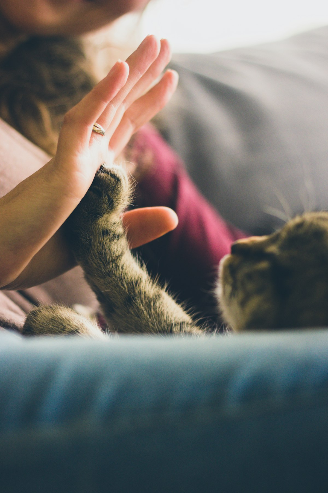
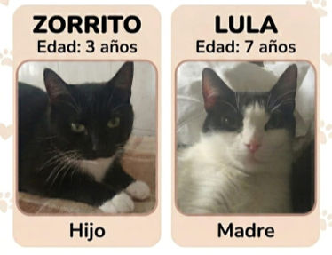

Hogar temporal
El animal vive en familia mientras espera adopción, evitando perrera o jaula.
Comprometidos con el bienestar animal. Una acogida temporal puede marcar la diferencia mientras un animal espera su hogar definitivo.
Acogida temporal
La acogida reduce el estrés y ofrece estabilidad hasta la adopción definitiva (o la recuperación del animal por su dueño en casos puntuales).
El animal vive en familia mientras espera adopción, evitando perrera o jaula.
Se acuerdan en contrato: gastos veterinarios, comida y otros detalles según el caso.


Hermanos de 5 años (mezcla tipo Teckel con Podenco), tamaño mediano. Muy buenos, nobles, afectuosos y sociables. Se llevan genial con otros perros. Necesitan acogida temporal.
Ver historia →
3 gatos adultos (2 hembras y 1 macho), todos esterilizados. Muy buenos, tranquilos y cariñosos. Acogida temporal aprox. 6 meses. Gastos 100% cubiertos + remuneración.
Ver historia →
Madre e hijo (7 y 3 años). Carácter excepcional, muy buenos, cariñosos y de trato dulce. Buscan acogida temporal urgente juntos.
Ver historia →